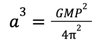

Methods for Calculating Exoplanet Parameters from the Processed Data
Calculating exoplanet parameters is the most exciting work that any astronomer who works with exoplanets
could complete, since it involves finding out basic information about the orbit, characteristics, mass,
size, and maybe even density of these planets. It is almost unbelievable that so much information can be
deduced from the basic observational methods talked about in the observations
section. Information about all of these parameters can then be used to theorize the potential
existence of life on some exoplanets, or whether the conditions on the exoplanets would be suitable
for human life, and even if it is probable that an exoplanet could be made mostly of Diamonds!
Since the radial velocity method involves finding the mass of exoplanets, it involves a lot of physical
laws to deduce any parameters from this method. Also, many of these laws require knowledge of the parent
star, like its mass and size for example. Therefore, before calculating the parameters of exoplanets, it
is crucial to understand how to calculate the parameters of stars, and therefore the parents of all of
these planets.
In fact, the first exoplanet was only discovered in 1995, while stars have been observed of 1000s of years,
thereby constituting the basis of all the knowledge applied to exoplanets, which form a relatively new
field of study. Below is a little adventure that will introduce you to the world of stars, and how we can
know information about them!
Now that we have become familiar with the world of stars, the parents of these exoplanets, the first step
towards calculating exoplanet parameters themselves is to collect the data. This is explained in depth
through the methods section, and can be done through radial velocity,
transit, or any other method. In this article, we will first look at calculating the parameters of a
classic Hot Jupiter planet, the first exoplanet discovered: 51 Pegasi b using the radial
velocity method, and also the data that we have now amassed in the stars section about its parent: 51
Pegasi.
Period
So having observed the wobble of the star through radial velocity variations in redshift and blueshift of
the spectral lines of 51 Pegasi, we can present that data graphically for 51 Pegasi (figure 1).
As seen, there is only one sine wave on this graph, unlike in double lined binaries, and that is the sine
wave of the wobbling star, since the exoplanet that is causing the wobble is not a star, and does not emit
its own light. As seen, while for most binaries the radial velocity was measured in kilometers per
second, for exoplanet wobbles, it appears as meters per second, showing that for the
detection of an exoplanet, instruments need to be much more precise and meticulous. This is the
primary reason that while spectroscopic binary stars were known for decades, 51 Pegasi b was only
discovered in 1995.
By observing the length of one rotation on the x-axis, we can see that the period of 51 Pegasi is
4.23 days. So it takes 4.23 days for the star to make one wobble, implying that it also takes
the planet 51 Pegasi b 4.23 days to make an orbit around its star.
Host Star Velocity
The only other parameter that can be observed from the raw data is the radial velocity, or orbital velocity
of the host star. This is technically the orbital velocity, but since we are dealing with a wobble, we can
think of this as the velocity of the star as it wobbles around and around on a small circular track. As
seen from the graph, the semi amplitude of the wave, and therefore the true velocity of the star (assuming
negligible orbital inclination) can be calculated as 56 m/s, or 0.056 km/s:
Orbital Radius
Knowing Newton’s version of Kepler’s 3rd law now, it is very simple to find the orbital radius of
51 Pegasi b. This is mostly due to the fact that for exoplanet orbits, it can be assumed that the orbital
radius is equal to the semi major axis, or the separation between the star and the planet, since the
mass of the planet is so insignificant compared to the mass of the star, meaning that the “orbit” of the
star is also very insignificant, and reduced only to a slight wobble.
So, we can model this calculation as:

As seen, the other assumption that was made here was that the total mass of the system, or the mass of
the star added to the mass of the planet is only M, or the mass of the star. Also, since we are dealing
with relative orbital radius (in AU relative to earth), and we have the period in days (also relative to
Earth), and the mass of 51 Pegasi in solar masses (also relative to the situation of our Earth with the
Sun), we can get rid of the constants in the equation, and calculate a semi major axis of about 0.053AU:
Velocity
For the velocity of the planet in orbit, there is no way to imply it from the semi-amplitude in its
sine wave like we did with binary stars, since planets do not emit their own spectral lines, and even
if they did, they would be too faint to see. However, we can apply the definition of velocity:
So, regardless of the missing RV curve, the semi major axis and period of the orbit could be applied to
solve for the velocity of 51 Pegasi b as 136 km/s.
Mass
Knowing the velocity of the star (V), the velocity of the planet (v), and the mass of the
star (M), a very simple relationship can now be applied to solve for the mass of the planet
(m). In fact, this is a much simpler process than calculating the mass of a binary star. The mass of 51
Pegasi turns out to be 0.47 Jupiter masses:
So as seen, it makes sense that the product of the planet mass and velocity be equal to the product of the
star mass and velocity, as the mass of one of them would increase compared to the other, its
velocity would would have to decrease to conserve an equal centrifugal force, and a balanced orbit.
Also, we must keep in mind that the sin(i) degeneracy also applies to planetary orbits, with
the only difference being that there is not even a way to estimate the orbital inclination of the orbit
without some very complex mathematical models, and some very abstract techniques that are beyond the
scope of this article (Rodler, 2012). Therefore, it must be kept in mind that this measurement
for the mass of 51 Pegasi b of about half a Jupiter mass is the minimum mass measurement. The
true mass is probably a little higher, assuming that there is some orbital inclination, meaning
that the true mass of 51 Pegasi b could go all the way up to even the mass of Jupiter.
Temperature
The temperature of exoplanets is usually estimated from the temperature of their host star, and also its
distance from the host star (orbital radius). So the orbital radius and temperature of exoplanets are
directly related (see data section).
Conclusion
As seen, through simple calculations, astronomers can learn alot about an exoplanet. We now know the
distance of 51 Pegasi b from its star, the length of its year, its mass, its velocity in orbit, and
can also estimate its temperature. Temperature is the first step to determine if a planet is habitable
or not. From the mass of the planet, one can also begin to imply whether the planet is a gas giant
unsuitable for life or better a rocky planet. Through the transit method calculations however,
astronomers can also learn about the size of these planets, something that is very interesting since size
and mass combined for a planet that is detected with both the transit and radial velocity methods can yield
the calculation of the density, and hint at compositions and the type of planet!
Transit Method (Kepler-22 b)
To demonstrate how parameters can be calculated from the transit method, we will look at the example of
Kepler 22 b, an exoplanet that was discovered in 2011 orbiting star Kepler 22. Since we
know that the transit method looks at periodic dips in the brightness of the host star, analyzing the
depths of these dips gives astronomers information about the radius of the planet. The graphed light
curve for Kepler 22 can be seen in figure 2. Unfortunately, I could not find reliable raw data
on this that I would have been able to work with myself, so the data is taken from an Astrobites
article.
Figure 2: The light curve for star Kepler 22.
As seen, from the initial brightness level of 1, there is a drop during the transit of planet Kepler 22 b
to about 0.9994 in relative brightness. So the brightness drops 0.06% during transit. Using the equation
below, this is all the information that is required to calculate the radius of Kepler 22 b, of course
knowing the radius of the host star Kepler 22. That value is 0.87 solar radii, and can be calculated with
the same method as explained in the star articles for 51 Pegasi. So as seen, the
ratio of the change in brightness over the initial brightness is equal to the ratio of the radius of the
planet squared over the radius of the host star squared. In other words, this means that the 0.06% drop in
brightness signals that the radius of Kepler 22 b squared will be 0.06% of the radius of its star Kepler 22
squared. Solving yields a radius for Kepler 22b of about 2.3 Earth radii:
So even though there is a limitation in the transit method that it is more difficult to even estimate
all of the other parameters that can be easily calculated with the radial velocity method, it does provide
something that the RV method does not: radius. Also, being able to calculate an exoplanet with the transit
method implies an orbital inclination that is very low for that orbit, meaning that if that exoplanet were
to be observed with the radial velocity method, the results would be very accurate.
Knowing both the radius and mass furthermore for an exoplanet is very valuable, since it allows for the
calculation of the density of the exoplanet with the following formula:
Knowing the density is very exciting, since it provides clues about the composition of the exoplanet,
whether it is a gas giant, rocky planet, or even a water world! Check out the next section on
data science with exoplanet parameters to see how much we can know about exoplanets
knowing only these simple parameters.